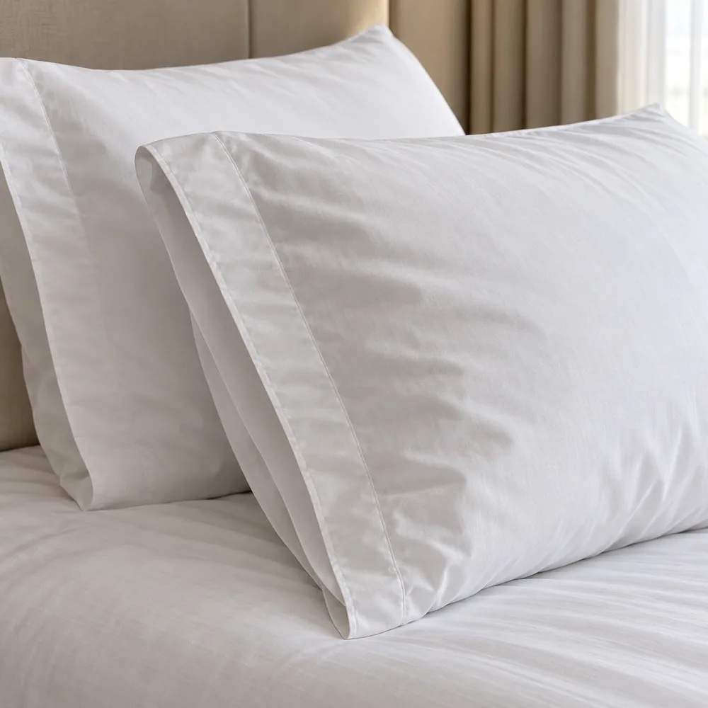
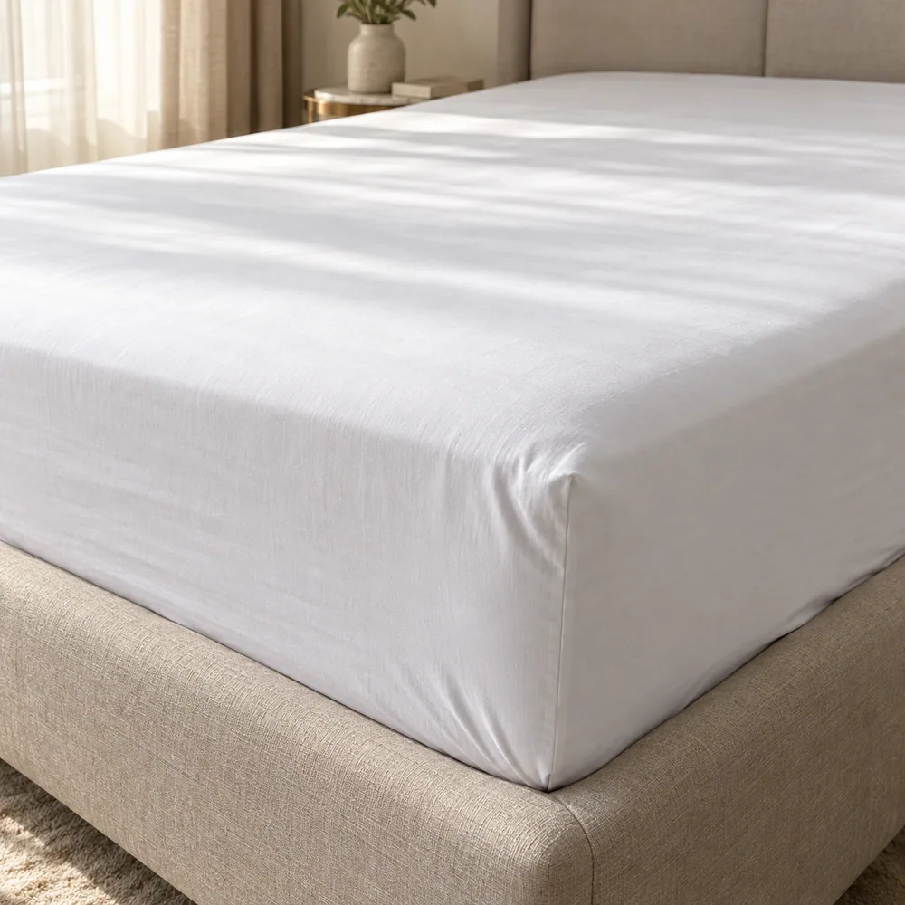
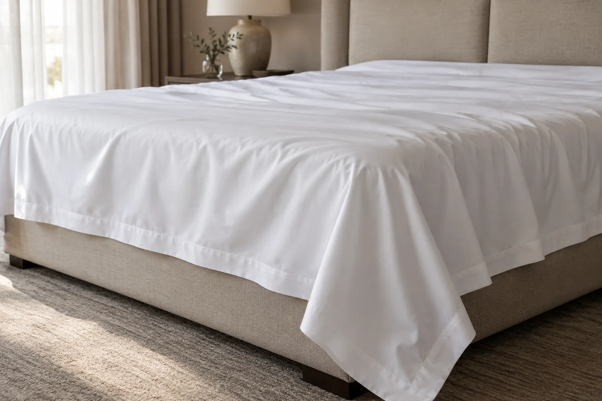
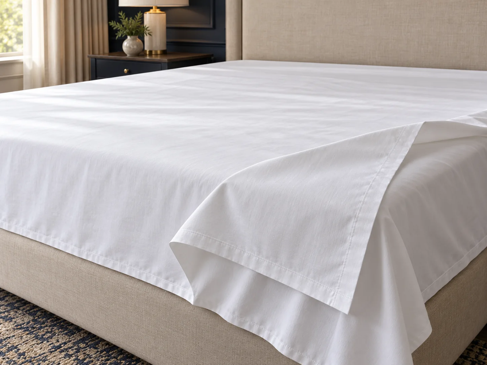
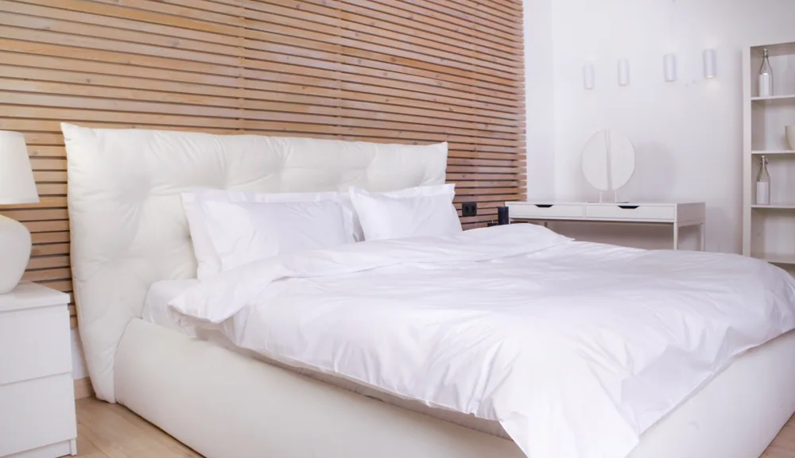
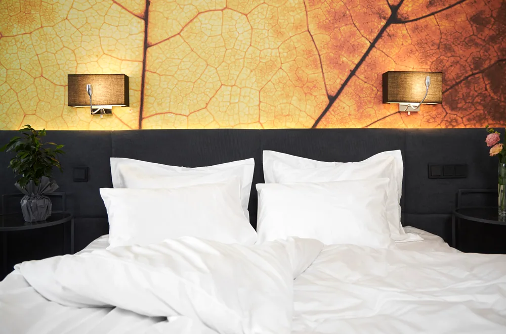
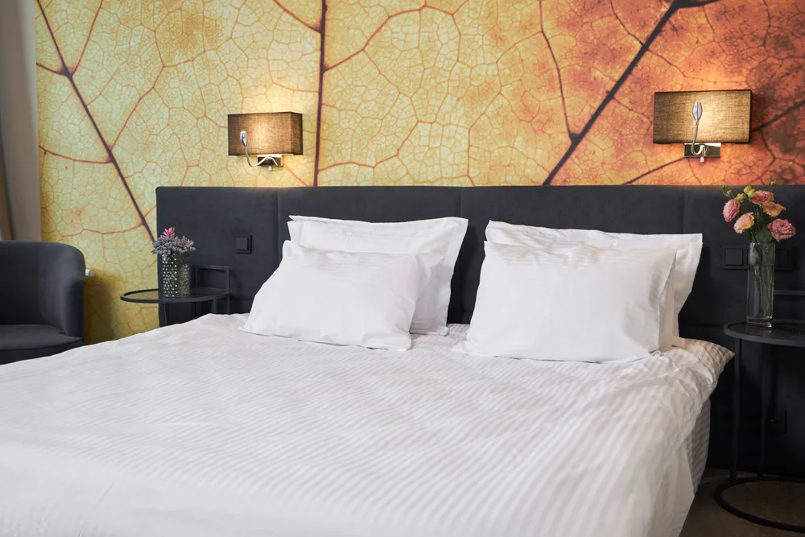

Стандарт
СтандартНаволочки · Стандарт
Наволочка · бязь
Матова бавовняна база для регулярного обороту.
Особливість
Проста, перевірена тканина у форматах 50×70 та 70×70.
Білизна формує перше враження від ліжка. Для бізнесу важливі не лише гладкість і білизна, а точність розмірів, стабільність швів та зручність для хаускіпінгу.
Порівняйте матеріали й особливості виробів, оберіть розмір і колір та додайте потрібне до замовлення.
Окремо для кожного розміру подушки.
СтандартМатова бавовняна база для регулярного обороту.
Проста, перевірена тканина у форматах 50×70 та 70×70.

КомфортГладкий контакт і м’який блиск.
Делікатна гладка поверхня для комфортнішого відчуття ліжка.
 Преміум
ПреміумСвіжа матова поверхня з тонкою фактурою.
Щільне полотняне переплетення з виразною матовою фактурою.
Для односпальних і двоспальних ліжок: оберіть тканину та потрібний формат.

СтандартПрактичне полотно для щоденного застилання.
Матове бавовняне полотно для охайного вигляду готельного ліжка.

КомфортГладша, м’якша поверхня.
Гладкий сатин і сатин-страйп для ліжок різних розмірів.

ПреміумМатовий, прохолодніший на дотик текстиль.
Делікатна матова фактура для стриманого оформлення ліжка.
Розмір підбирайте за реальною ковдрою, не лише за шириною ліжка.

СтандартКласичний матовий вигляд готельного ліжка.
Бавовняна бязь із матовою поверхнею для щоденного використання.

КомфортГладша поверхня та делікатний блиск.
Гладкий сатин і сатин-страйп у форматах для вашої ковдри.

ПреміумСтримана фактура та свіже відчуття.
Тонке полотняне переплетення створює гладку матову поверхню.
Перкаль дає матове свіже відчуття, сатин — гладкішу поверхню та м’який блиск.
Правильні припуски й розмір зменшують час застилання та допомагають ліжку виглядати охайно.
Закупівлю планують разом із циклом прання, завантаженням і чистим оперативним резервом.
Залиште контакти — уточнимо сценарій використання, кількість і бажаний рівень, після чого підготуємо пропозицію.